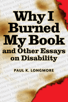

"Personal inclination made me a historian. Personal encounter with public policy made me an activist."
"Personal inclination made me a historian. Personal encounter with public policy made me an activist."


 "Personal inclination made me a historian. Personal encounter with public policy made me an activist."
"Personal inclination made me a historian. Personal encounter with public policy made me an activist."

|  |
Why I Burned My Book and Other Essays on DisabilityPaul K. Longmorepaper EAN: 978-1-59213-024-5 (ISBN: 1-59213-024-0) |
Honorable Mention in the category of Disability Rights, Gustavus Myers Book Award, 2004
Paul Longmore was selected by the American Association of People with Disabilities (AAPD) to receive The Henry B. Betts Award, 2004
"Paul Longmore's sharp and cogent criticism has always sought and found the soul of the disability rights movement. But these essays go far beyond activism and constitute a cultural document for a people adrift. Longmore's refreshing views represent an intellectual Ellis Island for people with disabilities, hampered by bureaucracy, myth and sentiment, trying to find a place in America. His stories are as important to this nation's sense of self as the Mayflower's landing at Plymouth Rock."
—John Hockenberry, author of A River Out Of Eden and Moving Violations
This wide-ranging book shows why Paul Longmore is one of the most respected figures in disability studies today. Understanding disability as a major variety of human experience, he urges us to establish it as a category of social, political, and historical analysis in much the same way that race, gender, and class already have been. The essays here search for the often hidden pattern of systemic prejudice and probe into the institutionalized discrimination that affects the one in five Americans with disabilities.
Whether writing about the social critic Randolph Bourne, contemporary political activists, or media representations of people with disabilities, Longmore demonstrates that the search for heroes is a key part of the continuing struggle of disabled people to gain a voice and to shape their destinies. His essays on bioethics and public policy examine the conflict of agendas between disability rights activists and non-disabled policy makers, healthcare professionals, euthanasia advocates, and corporate medical bureaucracies. The title essay, which concludes the book, demonstrates the necessity of activism for any disabled person who wants access to the American dream.
Excerpt available at www.temple.edu/tempress
"Paul Longmore is simply the best historian now writing about disabilities. This volume collects a series of major essays that have shaped the academic and public discourse about disabilities inside of and beyond the university. From the unwritten history of disabled people to questions of assisted suicide, and the public face of disability culture, Longmore writes intelligently, compassionately, and readably. Read these essays and learn!"
—Sander L. Gilman, Distinguished Professor of the Liberal Arts and Sciences and of Medicine, The University of Illinois-Chicago
"Longmore offers poignant observations about images of disability in American culture....A major strength of Longmore's essays is calling our attention to historical antecedents, so that current disability issues can be put in the context of developments in society and technology."
—New Political Science
"[A] fine introduction to the contemporary study of disability."
—Reviews in American History
"Longmore's newest work provides an engaging discussion of some of the major issues and concerns within the disability community as well as a scholarly review of the major events in disability history.... The book provides an in-depth accounting of disability rights history, scholarship, activism, and advocacy. It is lively and very accessible and is an important contribution to the files of disability studies, as well as broadening and deepening our national understanding of the complexity of our history, one the author's stated goals."
—The Journal of Sociology and Social Welfare
"Why I Burned My Book is a must-read for anyone seeking to understand the history and the current issues of disability."
—The Progressive
"Why I Burned My Book and Other Essays on Disability is a collection of some of his best writing on both history and policy. The combination of scholarship and activism displayed in this book is exciting."
—H-Net
"The strength of Longmore's work [is] in remembering the ongoing marginalization of millions[.] Longmore challenges and disrupts dominant ideologies of 'normality' and disability. Furthermore, he offers an alternative in writing the study of disability as social history.... Longmore's text is a worthy read for its intellectual sensibility."
—Metapsychology Online
"As is evident from the issues they raise, both [The Difference That Disability Makes and Why I Burned My Book] take a more provocative stance regarding disability—one that is vastly different from how disability has been traditionally discussed in educational contexts.... Together both books can provide a beginning toolbox to challenge educators and researchers to take another look at our practices and assumptions about disability."
—Educational Researcher
Also available in e-book
Foreword – Robert Dawidoff
Introduction
Part I: Analyses and Reconstructions
1. Disability Watch
2. The Life of Randolph Bourne and the Need for a History of Disabled People
3. Uncovering the Hidden History of Disabled People
4. The League of the Physically Handicapped and the Great Depression: A Case Study in the New Disability History
5. The Disability Rights Moment: Activism in the 1970s and Beyond
Part II: Images and Reflections
6. Film Reviews
7. Screening Stereotypes: Images of Disabled People in Television and Motion Pictures
Part III: Ethics and Advocacy
8. Elizabeth Bouvia, Assisted Suicide, and Social Prejudice
9. The Resistance: The Disability Rights Movement and Assisted Suicide
10. Medical Decision Making and People with Disabilities: A Clash of Cultures
Part IV: Protests and Forecasts
11. The Second Phase: From Disability Rights to Disability Culture
12. Princeton and Peter Singer
13. Why I Burned My Book
Index
 | Paul K. Longmore is Professor of History at San Francisco State University. He is the author of The Invention of George Washington and the co-editor (with Lauri Umansky) of The New Disability History: American Perspectives. |
Disability Studies
History
Political Science and Public Policy
American Subjects, edited by Robert Dawidoff.
The American Subjects series, edited by Robert Dawidoff, will introduce readers to unfamiliar areas or figures in American culture. All of the titles in this series will be the first on their particular subject. Each will tell an unfamiliar story and will emphasize the cultural side of how Americans have lived and what they have created or thought.
© 2015 Temple University. All Rights Reserved. This page: http://www.temple.edu/tempress/titles/1671_reg.html.